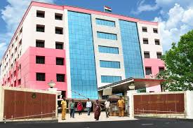

தமிழ்நாடு அரசுப் பணியாளர் தேர்வாணையம் (Tamil Nadu Public Service Commission- TNPSC) என்பது தமிழக அரசுப் பணிக்குத் தேவையானவர்களை தகுந்த போட்டித் தேர்வுகள் வாயிலாகத் தேர்வு செய்ய ஏற்படுத்தப்பெற்ற ஒரு அரசு சார்ந்த அமைப்பு ஆகும். இது இந்தியாவில் மாநில அளவில் உருவாக்கப்பெற்ற முதல் தேர்வாணையமாகும். 1929இல் சென்னை மாகாண சட்டமன்றத்தில் நிறைவேற்றப்பெற்ற ஒரு சட்டத்தின் மூலம் ஒரு தலைவர் மற்றும் இரண்டு உறுப்பினர்களை கொண்டு உருவாக்கப்பெற்றது. அப்பொழுது இதன் பெயர் The Madras Service Commission. மாநில மறுசீரமைப்புக்குப் பின் 1957இல் இது மதராசு அரசுப் பணியாளர் தேர்வாணையம் (Madras Public Service Commission) என்று பெயர் மாற்றம் செய்யப்பெற்று, சென்னையைத் தலைமையிடமாகக் கொண்டு செயல்படத் தொடங்கியது. சென்னை மாநிலம் என்பது தமிழ்நாடு என மாற்றம் பெற்ற பிறகு இதுவும் தானாகவே ”தமிழ்நாடு அரசுப் பணியாளர் தேர்வாணையம்” என்று மாறிவிட்டது.
APPLY NOW